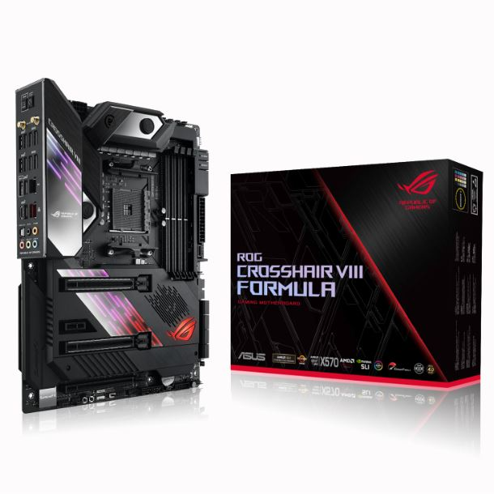

MOTHER ASUS X570 ROG CROSSHAIR VIII FORMULA
Precio efectivo o transferencia: $301.050,00 

Precio efectivo o transferencia: $301.050,00
ROG Crosshair VIII Formula ofrece conectividad avanzada para garantizar experiencias de juego sin interrupciones. Con la última red ultrarrápida, que incluye Wi-Fi 6 (802.11ax) y Ethernet dual con un puerto 5G, ROG Crosshair VIII Formula elimina todos los cuellos de botella para jugar en línea y LAN, minimizando el retraso y brindando una experiencia general más fluida.
CPU: AMD AM4 3ª Chipset AMD X570 Memoria RAM 4 x DIMM Hasta 128Gb 4800Mhz Overclock Multi GPU NVIDIA 2 Way SLI // 3 Way AMD Radeon CrossFireX Ranuras de expansión: 1 x PCIe 4.0 x16 (modo x4) 1 x PCIe 4.0 x1
Almacenamiento: 1 x M.2_2 socket 3, con M Los dispositivos de almacenamiento clave, tipo 2242/2260/2280/22110 (modos PCIE 4.0 x4 y SATA) admiten 8 x puertos SATA de 6 Gb / s, Raid de soporte 0, 1, 10
LAN Intel® I211-AT Aquantia AQC111C 5G LAN ASUS LAN Guard ROG GameFirst V Tecnología
Red de datos inalámbrica Intel® Wi-Fi 6 AX200 Admite ancho de banda de canal: HT20 / HT40 / HT80 / HT160 2 x 2 Wi-Fi 6 (802.11 a / b / g / n / ac / ax) con MU-MIMO admite banda de frecuencia dual 2.4 / 5GHz Velocidad de transferencia de hasta 2.4Gbps Bluetooth 5.0
Audio CODEC S1220 de audio de alta definición ROG SupremeFX de 8 canales
Puertos USB (Relativo al tipo de build) 4 x USB 3.2 Gen 2 (4 Posterior Tipo A, rojo) 4 x puerto (s) USB 2.0 8 x puerto (s) USB 3.2 Gen 1 4 x puertos USB 3.2 Gen 2 1 x USB 3.2 Puerto
Puertos Entrada/Salida 1 x óptica S / PDIF 1 x botón Clear CMOS (s) 1 x USB BIOS Flashback ® Botón (es) 1 x ASUS Wi-Fi Módulo 1 x conectores de audio bañados en oro 4 x USB 3.2 Gen 1 (de hasta 5 Gbps) puertos 8 x puertos USB 3.2 Gen 2 (hasta 10 Gbps) () Puerto LAN contra sobretensiones (RJ45) 1 x puerto LAN AQC-111C 5G.
Puertos Internos 1 x PCH_FAN 2 x Encabezado (s) de tira Aura RGB 2 x Encabezado (s) direccionable Gen 2 2 x Soporte (s) de conector (s) USB 2.0 adicional (es) 4 Puerto (s) USB 2.0 1 x M.2 Socket 3 con M tecla, soporte de dispositivos de almacenamiento tipo 2242/2260 (modo SATA y PCIE) 1 x M.2 Socket 3 con tecla M, soporte de dispositivos de almacenamiento tipo 2242/2260/2280/22110 (modo SATA y modo PCIE) 8 x SATA 6Gb / Conector (es) s 1 x Conector (es) del ventilador de la CPU 1 x Conector (es) del ventilador de la CPU OPT 3 x Conector (es) del ventilador del chasis 1 x Conector (es) opcional del ventilador 1 x Conector AIO_PUMP 1 x Conector del ventilador H_AMP 1 x W_PUMP + conector 1 x conector de alimentación EATX de 24 pines 1 conector de alimentación ATX 12V de 8 pines 1 x conector (es) de alimentación ATX 12V de 4 pines 1 x conector (es) de audio del panel frontal (AAFP) 1 x interruptor (es) de modo lento 1 x encabezado (s) de modo LN2 1 x botón (s) de encendido 1 x Botón (s) de reinicio 1 x Conector (es) de nodo 1 x Botón de arranque seguro 1 x Botón de reintento 1 x Conector del panel del sistema 1 x Encabezado W_IN 1 x Encabezado W_OUT 1 x Encabezado W_FLOW 1 x Conector del sensor térmico 1 x Conector de altavoz 1 x Conector USB 3.2 Gen 2 (hasta 10 Gbps) 2 x conector USB 3.2 Gen 1 (hasta 5 Gbps) admite 4 puertos USB adicionales